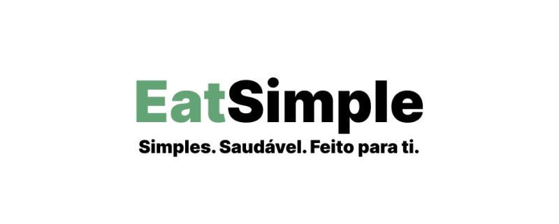

Diogo Gil
A dynamic Streamlit dashboard providing real-time portfolio risk insights. Supports data-driven decision-making through multi-method VaR analysis, CVaR, stress testing, backtesting, and interactive visualizations.

A customizable nutrition engine that generates fully personalized meal plans based on user attributes (age, sex, height, weight, activity level). Includes backend logic, database models, and an analytics dashboard to support product decisions.
Case study of a high-redshift galaxy from the JADES survey, analyzing JWST/NIRSpec spectra using full spectral fitting to investigate stellar populations, emission lines, and ionized gas conditions.
BNP Paribas – Rising Talents Program | Oct 2025 – Oct 2026
Freelancer | Oct 2023 – May 2025
"Bank" and "La Cantina" Restaurants | Jun 2023 – Sep 2023 & Jun 2022 – Sep 2022
“Estou a escrever esta referência a pedido de Diogo António Damásio Caixinha Dimas Gil que se está a candidatar ao Mestrado em Finança Internacional na Nova SBE. O Diogo Gil foi meu aluno no ano lectivo 2023/24 numa disciplina relacionada com a Inteligência Artificial, da qual fui coordenador, chamada de “Sistemas Inteligentes”, sendo uma das disciplinas mais difíceis do curso da Licenciatura em Tecnologias de Informação da Faculdade de Ciências da Universidade de Lisboa. Esta disciplina é exigente tanto ao nível das competências em programação (na linguagem python) como na capacidade de resolução de problemas e aplicação de técnicas de análise de dados e aprendizagem automática. O Diogo Gil foi um aluno muito bem sucedido nessa disciplina, especialmente sendo um aluno da licenciatura em Física. Ele revelou grande competência ao nível de programação, aliada a uma enorme motivação e capacidade de trabalho. Sublinho que o Diogo Gil revelou uma grande capacidade multi-disciplinar ao adaptar-se com facilidade a novos tópicos, como demonstra o seu sucesso num tópico distante do domínio científico da sua licenciatura. Todas estas qualidades fazem com que eu o recomende, sem qualquer hesitação, para o mestrado em Finança Internacional, prevendo que será um aluno muito bem sucedido e que será sem dúvida também uma experiência muito rica e importante para o seu futuro académico e profissional. Se necessitarem de mais alguma informação podem contactar-me para pub@di.fc.ul.pt”
Dr. Paulo Urbano, Professor Auxiliar, Faculdade de Ciências da Universidade de Lisboa“To whom it may concern, I am writing to recommend Mr. Diogo Gil for admission to the Master’s in Finance program at Nova School of Business and Economics. Diogo was a student in two of my courses at the University of Lisbon, Analytical Mechanics and Computational Physics. What distinguishes Diogo is the breadth and coherence of his academic and professional path. He completed a Bachelor’s in Physics with a minor in Computer Engineering, a combination that has given him solid foundations in quantitative reasoning, problem-solving, and programming. During my classes, Diogo stood out for his perseverance. He may not have been among the top-performing students, but he consistently showed interest in understanding the conceptual and computational aspects of the material, especially where they intersected with real-world applications. His motivation was clear, and he was always eager to bridge the gap between theory and practice. What I find most compelling in Diogo’s profile is the combination of scientific training, coding skills, and a genuine interest in Finance. His current internship at BNP Paribas, along with his previous experience in quantitative risk modeling and dashboard development, demonstrate both his technical capacity and his commitment to the field. I believe this combination will allow him to approach financial problems with a structured, analytical mindset and a level of quantitative rigor that sets him apart from more conventional profiles. I am confident that Diogo will benefit greatly from the academic and professional ecosystem at Nova SBE, and that his curiosity, adaptability, and interdisciplinary background will enable him to contribute meaningfully to the program and beyond. I am available to provide further information if required. Yours sincerely, Nuno Araújo (Professor of Physics, Universidade de Lisboa, Portugal)”
Dr. Nuno Araújo - Professor of Physics, Universidade de Lisboa, Portugal“Dear Members of the Selection Committee I was asked to write a recommendation letter to support Diogo Gil’s application to the master program MSc in International Finance Nova SBE, which I am most happy to do. I firstly met Diogo in the academic year 2023/24, and later in 2024/2025, as he attended two courses I lecture, namely, Experimental Physics III and Thermodynamics and Kinetic Theory, which are part of the general curriculum of the degree in Physics. He did reasonably well in those courses and finished a degree in Physics with a minor in Computer Sciences in 2025. As a result, Diogo acquired a wide range of competences and technical skills in Physics, Mathematics, and Computer Science. This means, in particular, that he has been trained in critical thinking, and will be able to solve a broad spectrum of problems. I can speak from personal experience when I say that Diogo is incredibly kind and well-mannered, and he will be a great asset to any working group. I am certain that Diogo will excel in his professional life, and I recommend him for the MSc in International Finance Nova SBE full heartedly. Yours faithfully, Patrícia Ferreira Neves Faísca Assistant Professor of Physics (w/ habilittation) DF-FCUL and BioISI FCUL.”
Dr. Patrícia Faísca - Assistant Professor of Physics (w/ habilittation) DF-FCUL and BioISI FCUL“O Diogo Gil foi meu aluno nas aulas Teórico-práticas da disciplina de Eletromagnetismo e Ondas no ano letivo 2022/2023, lecionada na Faculdade de Ciências da Universidade de Lisboa. O Diogo foi sempre um aluno participativo nos laboratórios e diligente na execução dos relatórios que completou com notas de topo. Mais tarde voltou a ser meu aluno na disciplina de Eletrodinâmica Clássica. Igualmente, o Diogo realizou os trabalhos de casa com competência e com notas de topo obtendo 18/20 como classificação final. O Diogo é claramente um aluno dedicado, diligente, com interesses em várias áreas da Física e Matemática. Dadas as competências adquirias no seu percurso académico e a sua habilidade nata para resolver problemas, estou seguro de que o Diogo se tornará um profissional de grande nível qualquer que seja a área da sua especialização. Com os melhores cumprimentos, Professor Nelson Nunes Instituto de Astrofísica e Ciências do Espaço Faculdade de Ciências da Universidade de Lisboa”
Dr. Nelson Nunes - Instituto de Astrofísica e Ciências do Espaço - Faculdade de Ciências da Universidade de Lisboa“Exmos. Senhores, Eu, Victor Manuel Pérez Dimas Gil, na qualidade de representante da “D.G. Consultores – Contabilidade e Consultoria Económica”, tendo o prazer de recomendar Diogo António Gil, para o vosso Mestrado em Finanças na Nova SBE. Durante o seu curto mas prolífero período, no qual desenvolveu funções no nosso escritório, o mesmo sempre demonstrou capacidades e espírito crítico bem acima da média. Estas necessárias, no meu entender, para desenvolver qualquer atividade profissional a que se proponha no futuro. O mesmo demonstrou não só elevadas qualidades a nível profissional, como também a nível pessoal – íntegro, leal e companheiro. Assim, com base no meu conhecimento pessoal do candidato, acredito que o mesmo será uma mais valia para qualquer curso ou instituição.”
Dr. Victor Gil2026 – 2027 (In progress)
2025
2022 – 2025